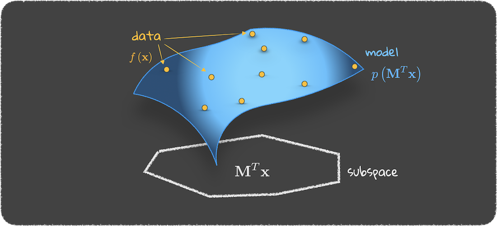

integrate, predict, explain & audit
equadratures is a model development platform. The models built in equadratures are explainable, robust, and do not require large cloud infrastructure to train. Additionally, equadratures' models can audit themselves as well as audit models built from other platforms - ushering a new era in artificial intelligence.
framework
equadratures builds models using orthonormal polynomials over subspaces. And while orthonormal polynomials - e.g., Hermite, Legendre, Laguerre - have been around since the time of Hermite, Legendre and Laguerre, using them for data science, analytics, and digital twinning is relatively new. Moreover, the construction of such models (underscored by the model coefficients) over subspaces rather than the full space ensures that even with a small amount of data, explainable, interpretable and robust models are always a few lines of code away.

utility
Fundamentally, equadratures is purpose built for task-driven outputs. Provided a model is built well, users are interested in extracting value from a model. This typically takes the form of the tasks below.
Numerous companies and academic institutions are already using equadratures. Join them and use equadratures to integrate, predict, explain and audit.